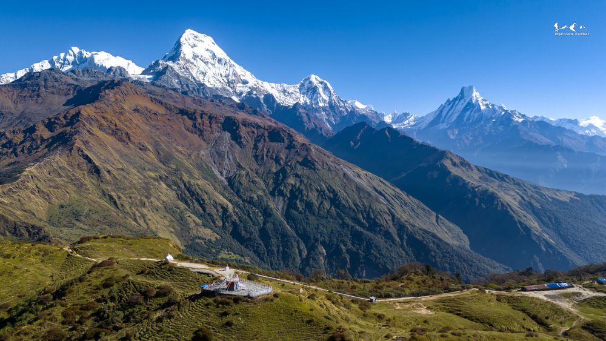
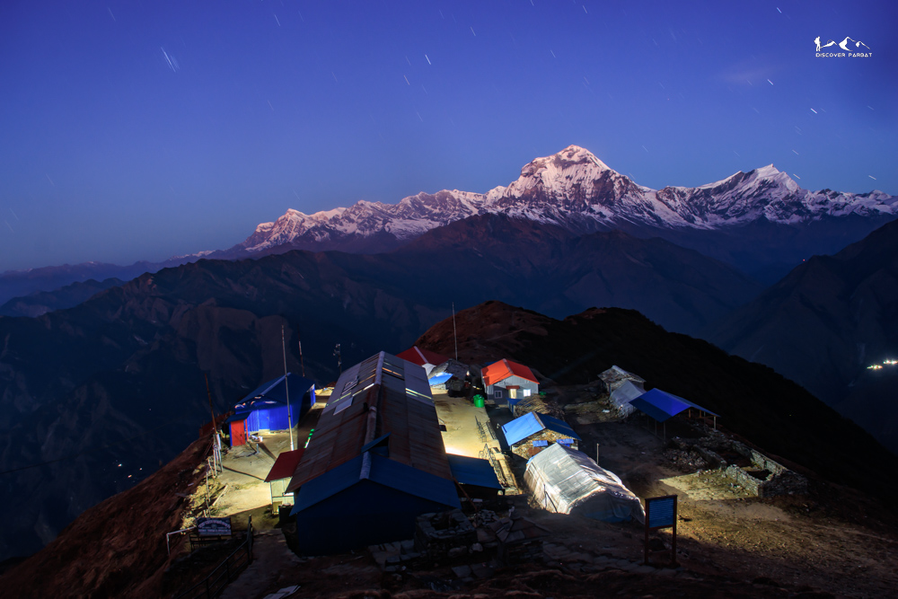
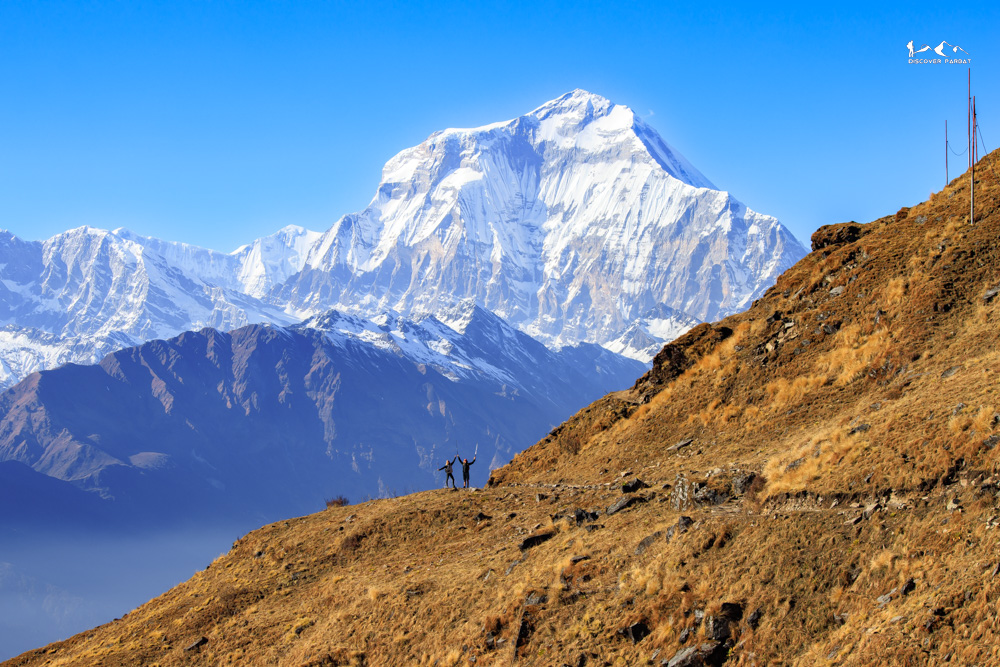
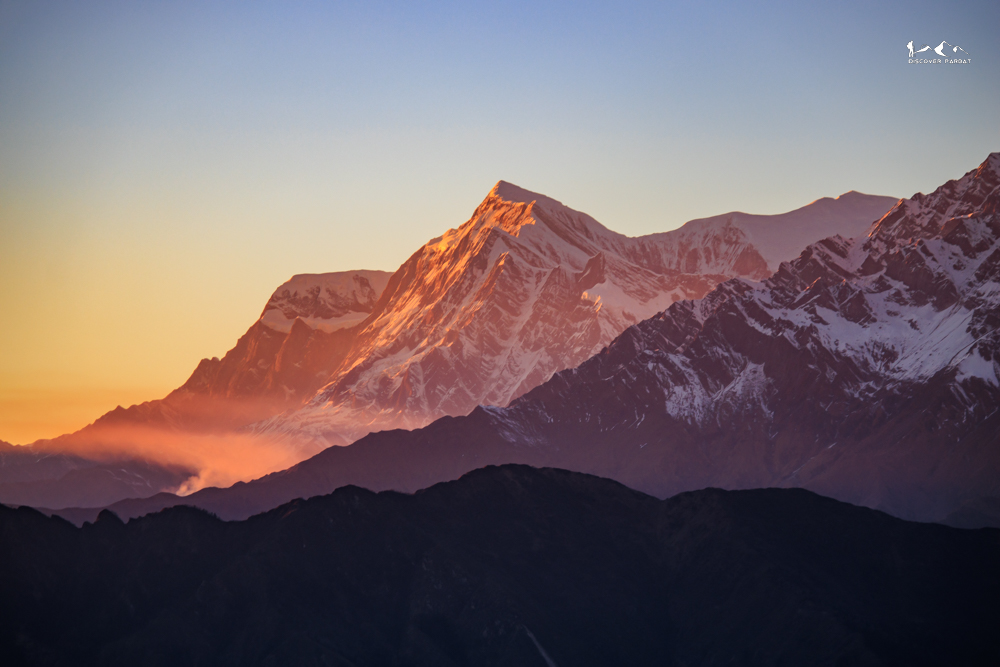
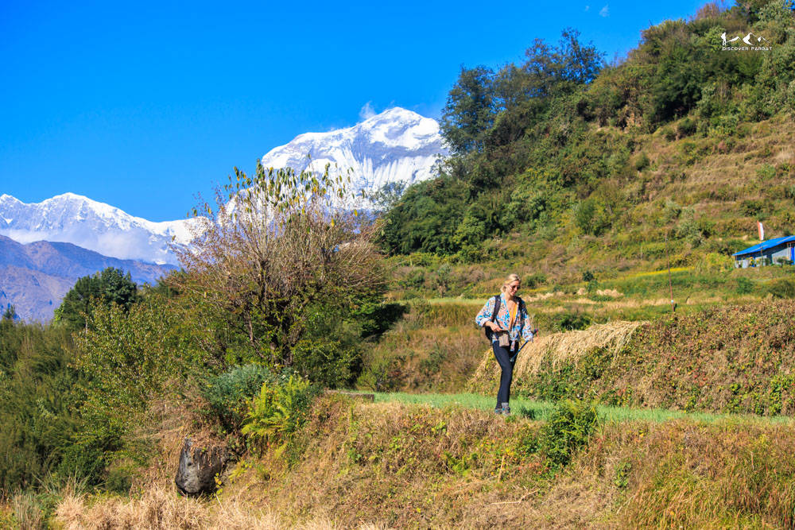
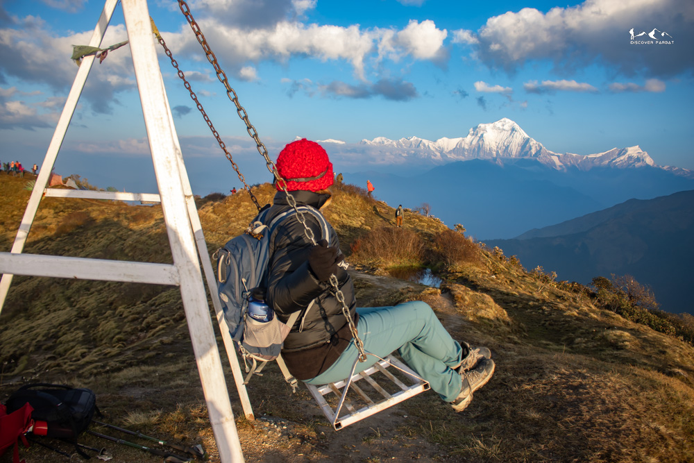

Less touristy trail with stunning views of the Annapurna Range









 Photo Gallery
Photo Gallery
The Short Multiple Viewpoints Trek is a compact yet deeply rewarding journey through some of the most diverse landscapes in the Annapurna and Parbat regions of Nepal. Designed for trekkers who want to maximise Himalayan experiences within a shorter timeframe, this route combines iconic viewpoints with hidden ridges, traditional Gurung villages, and quiet forest trails that most visitors never discover.
The adventure begins with a scenic drive from Pokhara to Ghandruk, one of the largest and most celebrated Gurung villages in Nepal. Perched at around 1,940 metres, Ghandruk offers immediate rewards with its slate-roofed stone houses, terraced fields, and commanding views of Annapurna South and Machhapuchhre rising dramatically above the Modi Khola valley. While Ghandruk sees a steady flow of trekkers, its cultural richness — from the Gurung Museum to the warm hospitality of local teahouses — makes it a worthy starting point for the days ahead.
From Ghandruk, the trail climbs steadily through dense rhododendron and oak forests towards Tadapani, sitting at around 2,630 metres. This forested ridge-top settlement is a quiet crossroads where the main trekking crowds thin noticeably. On clear mornings, the tree line frames jaw-dropping views of Annapurna South and Hiunchuli, while the surrounding forest provides shelter to Himalayan birds and the occasional glimpse of wildlife. The walk through these ancient woods, particularly when rhododendrons are in bloom from March to April, is one of the most atmospheric stretches of the entire route.
Continuing upward from Tadapani, the trail emerges onto the open ridge at Dobato, a viewpoint that feels almost secret in its seclusion. At roughly 3,600 metres, Dobato offers an unobstructed panorama across the Annapurna massif, with Annapurna South, Fang, and the iconic fishtail peak of Machhapuchhre arranged like a living painting above the valleys below. Sunrise here is a deeply quiet affair — far from the crowds of Poon Hill — with only the alpine wind and the slow ignition of gold across the high snow faces for company. Few trekkers venture to Dobato on this particular circuit, which makes mornings at this ridgeline feel like a private audience with the Himalayas.
The route then ascends further to Muldai Viewpoint, one of the finest and least-known high vantage points in the region. At approximately 3,700 metres, Muldai opens up an even wider sweep of the horizon, drawing the Dhaulagiri range into full view alongside the familiar giants of the Annapurna circuit. The high meadows around Muldai feel remote and untamed, with yak pastures rolling gently across the ridge and the silence broken only by wind. This is genuinely off-the-beaten-path trekking — trails here see a fraction of the foot traffic found on the main Poon Hill circuit, and the sense of discovery is palpable with every step.
Descending from Muldai, the trek joins the more frequented trail into Ghorepani, a busy trekking hub sitting at 2,860 metres. After days of quiet ridges and empty trails, Ghorepani's teahouses and the company of fellow trekkers from around the world provide a welcome contrast. The pre-dawn climb to Poon Hill at 3,210 metres remains one of the great trekking rituals in Nepal — the summit fills with headlamps and anticipation before the sky turns through shades of violet, pink, and gold behind a 180-degree panorama of Dhaulagiri, Tukuche, Nilgiri, Annapurna I through South, Machhapuchhre, and Lamjung Himal. It is a spectacular and well-deserved reward, even if shared with a crowd.
What truly distinguishes this itinerary from the standard Ghorepani loop is where the trail leads next. Beyond Ghorepani, the route pushes into Parbat district towards Kokhe Danda, an emerging viewpoint that is drawing only the most curious of trekkers. The trail here is noticeably quieter, winding through mixed forests and open ridgelines with Himalayan views that rival anything seen earlier on the trek. Kokhe Danda feels like a place still finding its way onto the map — a hidden gem where the mountains feel closer and the experience feels entirely your own.
From Kokhe Danda, the descent continues through Lespar, a traditional village where the rhythms of rural Nepali life continue largely untouched by tourism. Stone pathways connect terraced farms, local women weave and work outside their homes, and the teahouses are simple and sincere. This is the kind of authentic encounter that makes trekking in Nepal so meaningful — the mountains provide the spectacle, but the people provide the soul.
The final descent carries through Banau before the trail reaches the road at Kushma, a riverside town in Parbat district known for Nepal's highest suspension bridge over the Kali Gandaki gorge. From Kushma, a comfortable drive returns trekkers to Pokhara, completing a circuit that has moved from iconic vistas to secret ridges, from bustling mountain villages to quiet rural hamlets, and from the familiar to the wonderfully unexpected.
The Short Multiple Viewpoints Trek is ideal for trekkers with limited time who refuse to compromise on experience. It delivers world-class Himalayan panoramas, genuine off-trail discovery, and rich cultural immersion — all within a compact and well-connected route that leaves even seasoned trekkers with a lasting sense of having found something truly special.
You want to experience Poon Hill and Khopra Ridge without the usual tourist crowds
You have 8 days and want a full journey covering diverse landscapes from forest to ridge to village
You enjoy combining iconic viewpoints (Poon Hill) with hidden gems (Kokhe Danda, Muldai)
You love authentic cultural experiences — village homestays, local food, and momo-making sessions
You're looking for a quick 3–4 day option — this trek is designed to be a full 8-day journey
You want luxury teahouse facilities throughout — accommodation is comfortable but simple on this route
Morning drive from Pokhara to Ghandruk, a two and a half hour drive (43KM). We stop for a short tea break at Ghandruk and then start our hike to Tadapani. After two and a half hours, we reach Bhaisikharka where we stop for lunch. We then hike for a further hour on a gradual uphill trail to reach Tadapani. The trail today passes through beautiful Rhododendron forest.
We wake up early in the morning for the sunrise view. During clear weather, we can see Annapurna South, Hiunchuli and Mount Fishtail from here.
After breakfast, we start our hike towards Dobato. The trail again passes through beautiful Rhododendron and Oak forest. Initially it is gradual uphill and a bit steep before reaching Isharu from Meshar. At Isharu, we stop for lunch and then hike for another one and a half hours to reach Dobato, where we stay at Hotel Dobato ViewTop. We can also hike to Muldai for a sunset view.
Today, we wake up early and hike around 25 minutes to reach Muldai Viewpoint for the sunrise view. We can see Dhaulagiri, Annapurna and Mansiri range peaks from here. We then hike back down to the tea house, have breakfast, and start hiking to Khopra Danda.
This is a slightly longer day. After an hour, we reach Bayeli Kharka, mostly trekking along a ridge. Later, we descend to 2,800m and climb up to 3,100m to reach Chhistibung for lunch. From here, it is another 2.5–3 hrs of uphill hiking to Khopra Ridge, where we stay overnight at a Community Lodge.
Even though we cannot see the sunrise from Khopra Ridge itself, we enjoy stunning close views of Dhaulagiri on one side of the gorge and Annapurna South on the near side.
After breakfast, we start descending to Swanta Village. Initially, we follow the same trail as yesterday back to Chhistibung, and then descend to Swanta Village. We can have lunch at a stream-side restaurant one hour after Chhistibung, or wait until Swanta.
Since Ghorepani is not that far, we start slightly later today. Initially, we hike down to the river and after crossing a suspension bridge, we start climbing back up. We pass through the village of Chitre, sometimes hiking along the road before eventually reaching stone steps that lead all the way up to Ghorepani.
Today, unlike others, we don't start early in the morning for Poon Hill — we go after breakfast instead. It is an hour's uphill climb on stone steps, and by the time we reach Poon Hill it will be almost empty, so we have the entire viewpoint to ourselves. Later, we descend to Phulbari for lunch and then climb up to Kokhe Danda through a beautiful Rhododendron forest.
We wake up early for sunrise and the first sunrays over the Dhaulagiri and Annapurna range peaks. On a clear day, views extend all the way to Langtang Lirung and even Numbur peak in the Lower Everest region.
After breakfast, we start our hike to Lespar. Initially mostly flat or gradual downhill to Dhima Danda, then we descend to Jaljala and follow stone steps all the way down to Lespar. After lunch, we walk around to explore the village. In the evening, we can have a Momo making session with the host at the Homestay.
We enjoy a local breakfast in the morning. After that, we start our hike to Banau via Haljure. Initially an hour uphill, then mostly flat until Haljure, followed by another hour's descent to Banau. From Banau, we take a taxi or jeep back to Pokhara with a stop at Kushma — a total drive of about two and a half hours.
Yes — the trek is rated Moderate and is accessible to both beginners and experienced trekkers with a reasonable level of fitness. Day 3 is the longest and most demanding (7 hours, including a descent and re-ascent before Khopra Ridge), but the pace is manageable. If you can walk comfortably for 5–7 hours over consecutive days, you'll be well suited to this route.
The standard Poon Hill circuit is one of Nepal's busiest treks. This route includes Poon Hill but approaches it from a quieter direction and then continues into the hidden trails of Khopra Ridge, Kokhe Danda, and Parbat — areas that most trekkers never see. You get the iconic viewpoint without the crowds, plus several days of genuinely off-the-beaten-path trekking that the standard route simply doesn't offer.
Muldai is a viewpoint just above Dobato at around 3,650m, and it's absolutely worth the 25-minute pre-breakfast hike on Day 3. On clear mornings you get a sweeping panorama stretching from Dhaulagiri to the Annapurna and Manaslu ranges — some trekkers consider it even better than Poon Hill for the view-to-crowd ratio. We've built it into the itinerary as a sunrise stop on Day 3.
We arrange private transport from Pokhara to Ghandruk at the start (around 2.5 hours). On the final day, we descend to Banau and take a taxi or jeep back to Pokhara via Kushma — roughly another 2.5 hours. Both transfers are included in the trek cost. No public buses or connections to arrange on your end.
Accommodation varies by night. Most stops are comfortable teahouses with private rooms and shared bathrooms. Khopra Ridge has a Community Lodge which is simple but welcoming. The final night at Lespar is a genuine family homestay — warm, personal, and one of the highlights of the trip. Hot showers may be available at lower stops for a small fee. Bring a sleeping bag liner for added warmth.
October and November are peak season — post-monsoon clarity makes the mountain views exceptional and the trails are dry and firm. March to May is equally good, with rhododendrons in full bloom through the forest sections from Ghandruk to Dobato. December offers crisp visibility and very few trekkers, making it an underrated time to go. June to September brings monsoon rain and is generally not recommended for this route.
Yes — an Annapurna Conservation Area Permit (ACAP) and a TIMS card are both required. These are included in your trek cost and arranged by us in Pokhara before departure. You don't need to visit any permit offices yourself.
Teahouse menus cover the usual Himalayan staples — dal bhat, noodles, pasta, eggs, soups, and seasonal vegetables. At the Lespar homestay on Day 7, meals are home-cooked by your host family, and the evening includes a momo-making session. Three meals per day are included throughout. If you have dietary requirements, let us know in advance and we'll make sure each stop is informed.
Key items: sturdy trekking boots, warm layers including a down or fleece jacket (nights at Dobato and Khopra Ridge reach near-freezing), a waterproof outer shell, trekking poles (helpful on the longer descent days), a headlamp, reusable water bottle, sunscreen, and a daypack of 20–25L. A sleeping bag liner is useful for homestay and community lodge nights. We'll send a full packing list after booking.
If you need to return early for any reason, there is no refund on the remaining trek cost. However, we will arrange comfortable accommodation for you in Pokhara for the number of nights that remain on your itinerary — at no extra charge. Please see our full Cancellation Policy for complete details.